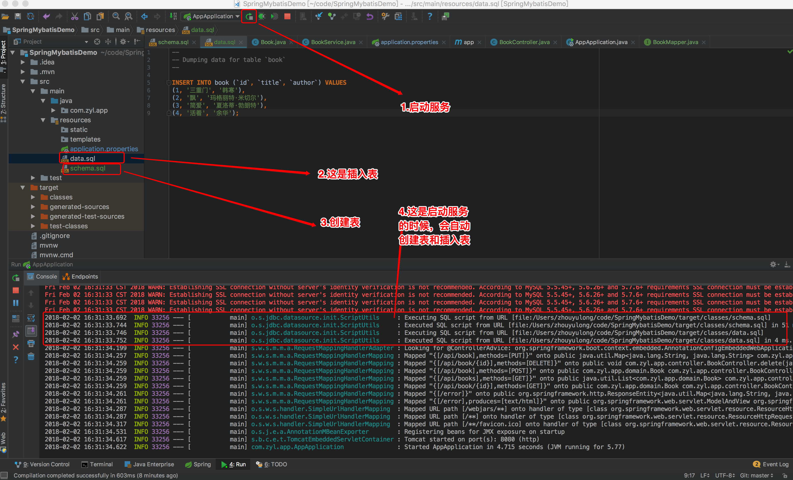

Spring Boot + Mybatis 创建CRUD应用(注解)
|使用Spring Boot Mybatis实现数据的增删改查（CRUD)
图书表：我们为CRUD操作创建了一个表格。
schema.sql
CREATE TABLE `book` (
`id` int(11) NOT NULL AUTO_INCREMENT COMMENT '图书ID',
`title` varchar(50) NOT NULL COMMENT '图书名',
`author` varchar(32) NOT NULL COMMENT '图书作者',
PRIMARY KEY (`id`)) ENGINE=InnoDB DEFAULT CHARSET=utf8;
data.sql
INSERT INTO book (`id`, `title`, `author`) VALUES
(1, '三重门', '韩寒'),
(2, '飘', '玛格丽特·米切尔'),
(3, '简爱', '夏洛蒂·勃朗特'),
(4, '活着', '余华');
启动服务创建表和插入表

注意的是：schema.sql是创建表，data.sql是插入表。要是Spring Boot启动的话,会自动创建表和插入mysql数据库里面的。
book图书表
mysql> select * from book;
+----+-----------+-------------------------+
| id | title | author |
+----+-----------+-------------------------+
| 1 | 三重门 | 韩寒 |
| 2 | 飘 | 玛格丽特·米切尔 |
| 3 | 简爱 | 夏洛蒂·勃朗特 |
| 4 | 活着 | 余华 |
+----+-----------+-------------------------+
4 rows in set (0.00 sec)
controller
- 一个典型的CRUD案例
src/main/com.zyl.app/controller/BookController.java
package com.zyl.app.controller;
import com.zyl.app.domain.Book;
import com.zyl.app.service.BookService;
import org.springframework.beans.factory.annotation.Autowired;
import org.springframework.web.bind.annotation.*;
import java.util.HashMap;
import java.util.List;
import java.util.Map;
@RestController
@RequestMapping("/api")
public class BookController {
@Autowired
private BookService bookService;
@RequestMapping(value = "/books", method = RequestMethod.GET)
public List<Book> findAll() {
List<Book> books = bookService.findAll();
return books;
}
@RequestMapping(value = "/book/{id}", method = RequestMethod.GET)
public Book findOne(@PathVariable("id") Long id) {
Book books = bookService.findOne(id);
return books;
}
@RequestMapping(value = "/book", method = RequestMethod.POST)
public Book save(@ModelAttribute Book book) {
bookService.save(book);
return book;
}
@RequestMapping(value = "/book/{id}", method = RequestMethod.PUT)
public Map<String, String> update(@PathVariable("id") Long id, @ModelAttribute Book book) {
Map<String, String> results = new HashMap<String, String>();
book.setId(id);
bookService.update(book);
return results;
}
@RequestMapping(value = "/book/{id}", method = RequestMethod.DELETE)
public void delete(@PathVariable("id") Long id) {
bookService.delete(id);
}
}
domain
- Book实体类定义
src/main/com.zyl.app/domain/Book.java
package com.zyl.app.domain;
public class Book {
private Long id; //图书ID
private String title; //图书名
private String author; //图书作者
public Book() {
super();
}
public Book(Long id, String title, String author) {
super();
this.id = id;
this.title = title;
this.author = author;
}
public Long getId() {
return id;
}
public void setId(Long id) {
this.id = id;
}
public String getTitle() {
return title;
}
public void setTitle(String title) {
this.title = title;
}
public String getAuthor() {
return author;
}
public void setAuthor(String author) {
this.author = author;
}
@Override
public String toString() {
return "Book{" +
"id=" + id +
", title='" + title + '\'' +
", author='" + author + '\'' +
'}';
}
}
service
- 从这里Book给mybatis处理
- BookMapper将在这之后处理mybatis
src/main/com.zyl.app/service/BookService.java
package com.zyl.app.service;
import com.zyl.app.domain.Book;
import com.zyl.app.mapper.BookMapper;
import org.springframework.beans.factory.annotation.Autowired;
import org.springframework.stereotype.Service;
import org.springframework.transaction.annotation.Transactional;
import java.util.List;
@Service
public class BookService {
@Autowired
private BookMapper bookMapper;
@Transactional
public List<Book> findAll() {
return bookMapper.findAll();
}
@Transactional
public Book findOne(Long id) {
return bookMapper.findOne(id);
}
@Transactional
public void save(Book book) {
bookMapper.save(book);
}
@Transactional
public void update(Book book) {
bookMapper.update(book);
}
@Transactional
public void delete(Long id) {
bookMapper.delete(id);
}
}
基本模式
依赖
- 其他模式通用
- 添加mybatis依赖到pom.xml
<dependency>
<groupId>org.mybatis.spring.boot</groupId>
<artifactId>mybatis-spring-boot-starter</artifactId>
<version>1.3.1</version>
</dependency>
mapper
src/main/com.zyl.app/mapper/BookMapper.java
package com.zyl.app.mapper;
import com.zyl.app.domain.Book;
import org.apache.ibatis.annotations.*;
import java.util.List;
@Mapper
public interface BookMapper {
@Select("select * from book")
List<Book> findAll();
@Select("select * from book where id = #{id}")
Book findOne(Long id);
@Insert("insert into book (title, author) values (#{title}, #{author})")
void save(Book book);
@Update("update book set title = #{title}, author = #{author} where id = #{id}")
void update(Book book);
@Delete("delete from book where id = #{id}")
void delete(Long id);
}
将数据库连接信息添加到application.properties
spring.datasource.url=jdbc:mysql://localhost:3306/mydb
spring.datasource.username=root
spring.datasource.password=root
spring.datasource.driver-class-name=com.mysql.jdbc.Driver
动作确认
# 查询图书列表
curl -v http://localhost:8080/api/books
# 查询图书ID
curl -v http://localhost:8080/api/book/1
# 创建一个图书
curl -v -XPOST --data "title=灵魂的事&author=史铁生0" http://localhost:8080/api/book/
# 更新一个图书
curl -v -XPUT --data "title=灵魂的事&author=史铁生" http://localhost:8080/api/book/5
# 删除图书
curl -v -XDELETE http://localhost:8080/api/book/5
查询图书列表
Last login: Fri Feb 2 14:18:19 on ttys004
You have new mail.
$ curl -v http://localhost:8080/api/books
* Trying ::1...
* TCP_NODELAY set
* Connected to localhost (::1) port 8080 (#0)
> GET /api/books HTTP/1.1
> Host: localhost:8080
> User-Agent: curl/7.51.0
> Accept: */*
>
< HTTP/1.1 200
< Content-Type: application/json;charset=UTF-8
< Transfer-Encoding: chunked
< Date: Fri, 02 Feb 2018 08:45:10 GMT
<
* Curl_http_done: called premature == 0
* Connection #0 to host localhost left intact
[{"id":1,"title":"三重门","author":"韩寒"},{"id":2,"title":"飘","author":"玛格丽特·米切尔"},{"id":3,"title":"简爱","author":"夏洛蒂·勃朗特"},{"id":4,"title":"活着","author":"余华"}]
查询图书ID
$ curl -v http://localhost:8080/api/book/1
* Trying ::1...
* TCP_NODELAY set
* Connected to localhost (::1) port 8080 (#0)
> GET /api/book/1 HTTP/1.1
> Host: localhost:8080
> User-Agent: curl/7.51.0
> Accept: */*
>
< HTTP/1.1 200
< Content-Type: application/json;charset=UTF-8
< Transfer-Encoding: chunked
< Date: Fri, 02 Feb 2018 08:53:04 GMT
<
* Curl_http_done: called premature == 0
* Connection #0 to host localhost left intact
{"id":1,"title":"三重门","author":"韩寒"}
创建一个图书
$ curl -v -XPOST --data "title=灵魂的事&autho/=史铁生0" http://localhost:8080/api/book
Note: Unnecessary use of -X or --request, POST is already inferred.
* Trying ::1...
* TCP_NODELAY set
* Connected to localhost (::1) port 8080 (#0)
> POST /api/book/ HTTP/1.1
> Host: localhost:8080
> User-Agent: curl/7.51.0
> Accept: */*
> Content-Length: 36
> Content-Type: application/x-www-form-urlencoded
>
* upload completely sent off: 36 out of 36 bytes
< HTTP/1.1 200
< Content-Type: application/json;charset=UTF-8
< Transfer-Encoding: chunked
< Date: Fri, 02 Feb 2018 08:54:06 GMT
<
* Curl_http_done: called premature == 0
* Connection #0 to host localhost left intact
{"id":null,"title":"灵魂的事","author":"史铁生0"}
看看有没创建一个图书
mysql> select * from book;
+----+--------------+-------------------------+
| id | title | author |
+----+--------------+-------------------------+
| 1 | 三重门 | 韩寒 |
| 2 | 飘 | 玛格丽特·米切尔 |
| 3 | 简爱 | 夏洛蒂·勃朗特 |
| 4 | 活着 | 余华 |
| 5 | 灵魂的事 | 史铁生0 |
+----+--------------+-------------------------+
5 rows in set (0.00 sec)
更新一个图书
$ curl -v -XPUT --data "title=灵魂的事&author=史铁生" http://localhost:8080/api/book/5
* Trying ::1...
* TCP_NODELAY set
* Connected to localhost (::1) port 8080 (#0)
> PUT /api/book/5 HTTP/1.1
> Host: localhost:8080
> User-Agent: curl/7.51.0
> Accept: */*
> Content-Length: 35
> Content-Type: application/x-www-form-urlencoded
>
* upload completely sent off: 35 out of 35 bytes
< HTTP/1.1 200
< Content-Type: application/json;charset=UTF-8
< Transfer-Encoding: chunked
< Date: Fri, 02 Feb 2018 09:08:13 GMT
<
* Curl_http_done: called premature == 0
* Connection #0 to host localhost left intact
查询图书列表,看看是否更新
mysql> mysql> select * from book;
+----+--------------+-------------------------+
| id | title | author |
+----+--------------+-------------------------+
| 1 | 三重门 | 韩寒 |
| 2 | 飘 | 玛格丽特·米切尔 |
| 3 | 简爱 | 夏洛蒂·勃朗特 |
| 4 | 活着 | 余华 |
| 5 | 灵魂的事 | 史铁生 |
+----+--------------+-------------------------+
5 rows in set (0.00 sec)
删除图书
$ curl -v -XDELETE http://localhost:8080/api/book/5
* Trying ::1...
* TCP_NODELAY set
* Connected to localhost (::1) port 8080 (#0)
> DELETE /api/book/5 HTTP/1.1
> Host: localhost:8080
> User-Agent: curl/7.51.0
> Accept: */*
>
< HTTP/1.1 200
< Content-Length: 0
< Date: Fri, 02 Feb 2018 09:10:01 GMT
<
* Curl_http_done: called premature == 0
* Connection #0 to host localhost left intact
查询图书列表，是否删除一个图书ID=5
mysql> select * from book;
+----+-----------+-------------------------+
| id | title | author |
+----+-----------+-------------------------+
| 1 | 三重门 | 韩寒 |
| 2 | 飘 | 玛格丽特·米切尔 |
| 3 | 简爱 | 夏洛蒂·勃朗特 |
| 4 | 活着 | 余华 |
+----+-----------+-------------------------+
4 rows in set (0.00 sec)
这样完成了CRUD功能，刚才是第一种方案（不包括XML，注解MyBatis）还有另一种方案就是MyBatis XML设置.
Github项目地址：Spring Boot + Mybatis CRUD应用(注解Mybatis)